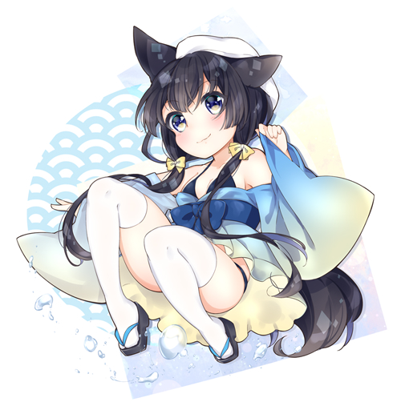
Things don't always turn out as you expect,
but they do turn out as you DO.
座右の銘「思う通りにはならないが、やった通りにはなる」
正解が無い時も、試行錯誤を重ねて前に進み続ける
Skills
Likes
Works
Games
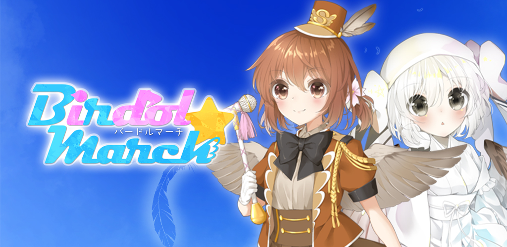
Birdol March
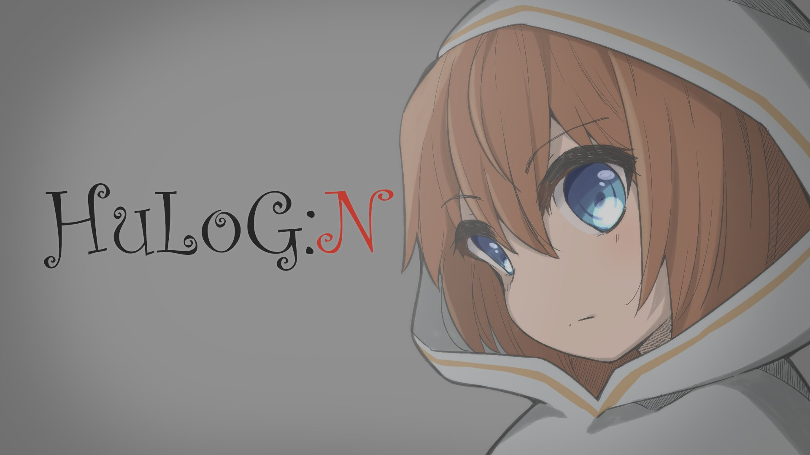
Hulog:N
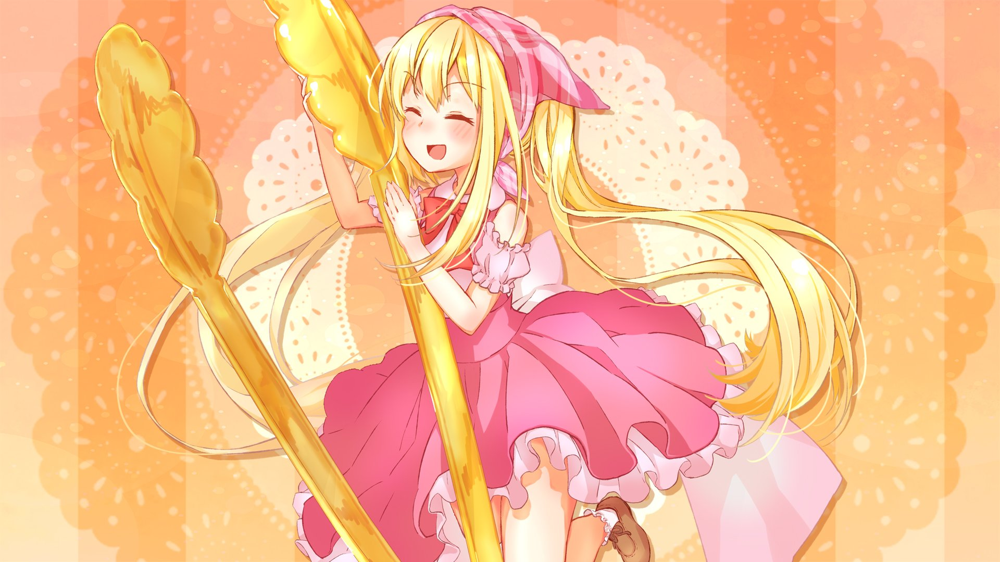
I wanna be the baker

Birdol March / バードル・マーチ
野鳥×アイドル＝バードル！！
制作背景
| 【制作概要】 | 早稲田祭2021に向けて、デジタル創作サークル「経営情報学会(MIS.W)」の有志（チーム名：鳥企画）が作成した、iOS/Android対応ソシャゲ風育成ゲーム『バードル・マーチ』です。 |
|---|---|
| 【制作期間】 | 2021年5月〜11月 (約6ヶ月間) |
| 【使用技術】 | 自身: Adobe Photoshop, CLIP STUDIO, Adobe Premiere Pro, HackMD, Slack チーム: Unity (C#), Git, Go, Cubase, Blender |
| 【担当範囲】 | 企画立案、プロジェクトリーダー（マネジメント全般）、CG責任者 |
| 【チーム構成】 | 計32名 (プログラマー10名、イラストレーター15名、シナリオ5名、音楽2名) |
Apple Store、Google Play Store、Microsoft Storeでの配布&オンラインサービスを終了し、現在は Github でオフライン版を配布中です！
プロジェクトの工夫
| 【マネジメント】 | 学業が最優先のため、最悪リーダーとテックリーダーだけで展示できるよう優先順位をつけて作業を進めました。 |
|---|---|
| 【プログラム】 | プログラム担当がサーバーとの通信機能を学ぶため、ユーザー管理機能を実装しました。 |
| 【CG管理】 | 各CGスタッフのスケジュールや作業可能量がバラバラのため、キャラクター数を可変にして調整できるようにしました。 |
| 【プラットフォーム】 | これまで開発したゲームはPCのみでしたが、みんなでスマートフォンで遊べるゲームを目指し、アプリストアへのリリースを目標としました。 |
| 【UI/UX】 | 手でキャラクターを触って動かす面白さが重要と考え、成長パートとライブ（実戦）パート両方で、キャラクターをドラッグアンドドロップして動かすUIを採用しました。 |
Others
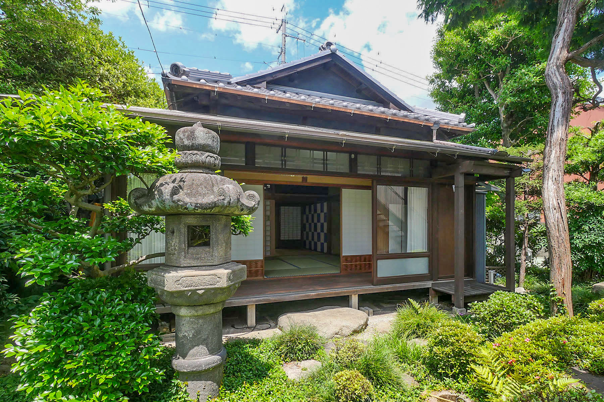
民泊 黒門館アネックス1F / 青鳥荘
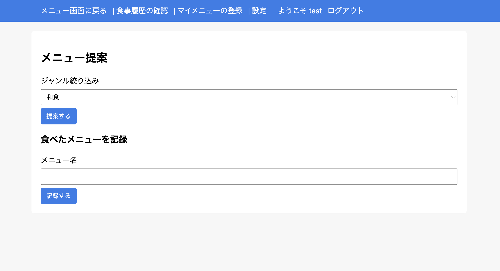
ご飯サジェストサイト
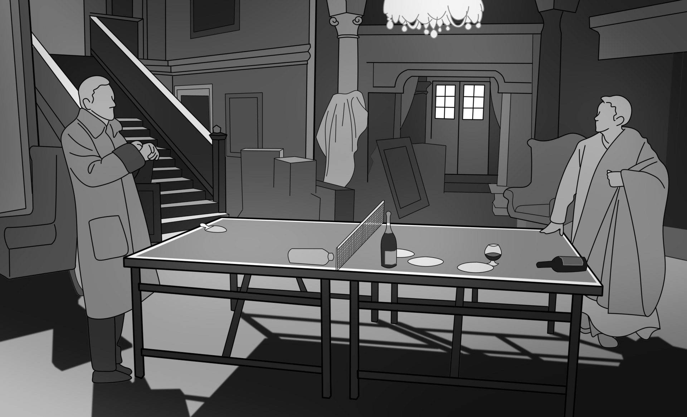
論文の図版作成
Graphics
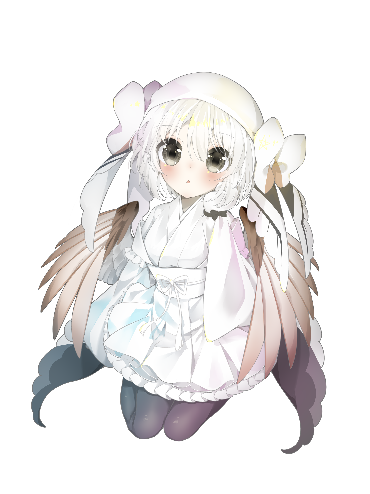
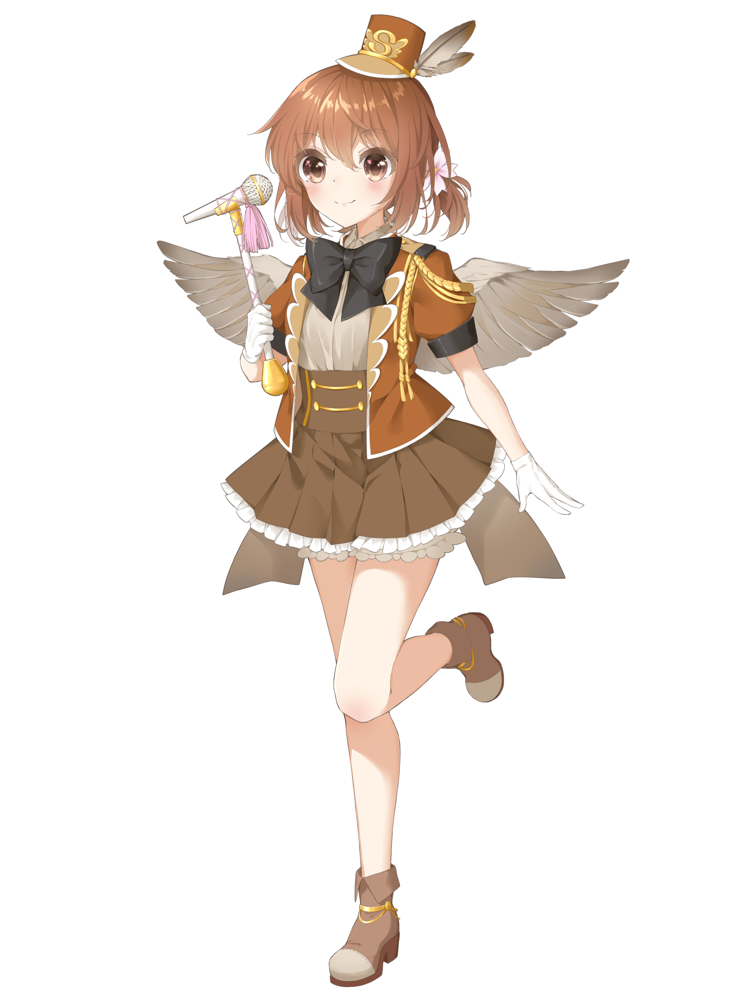
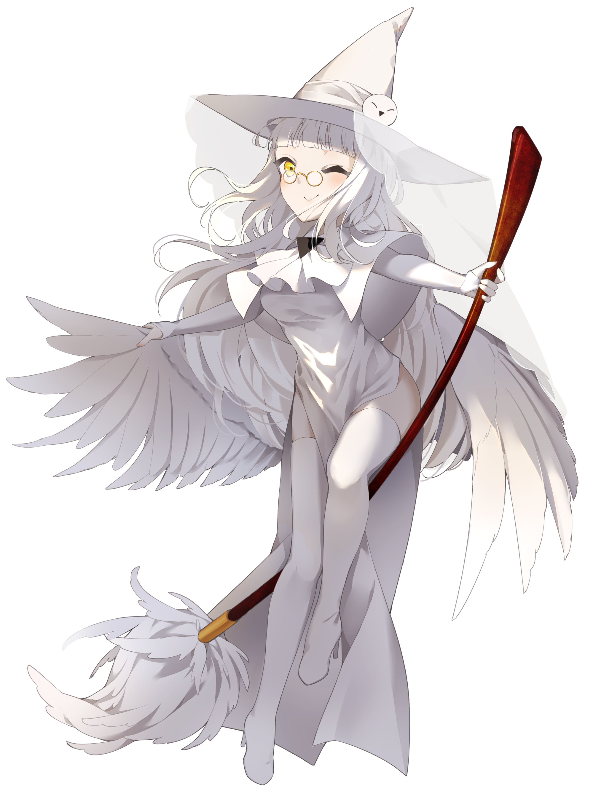
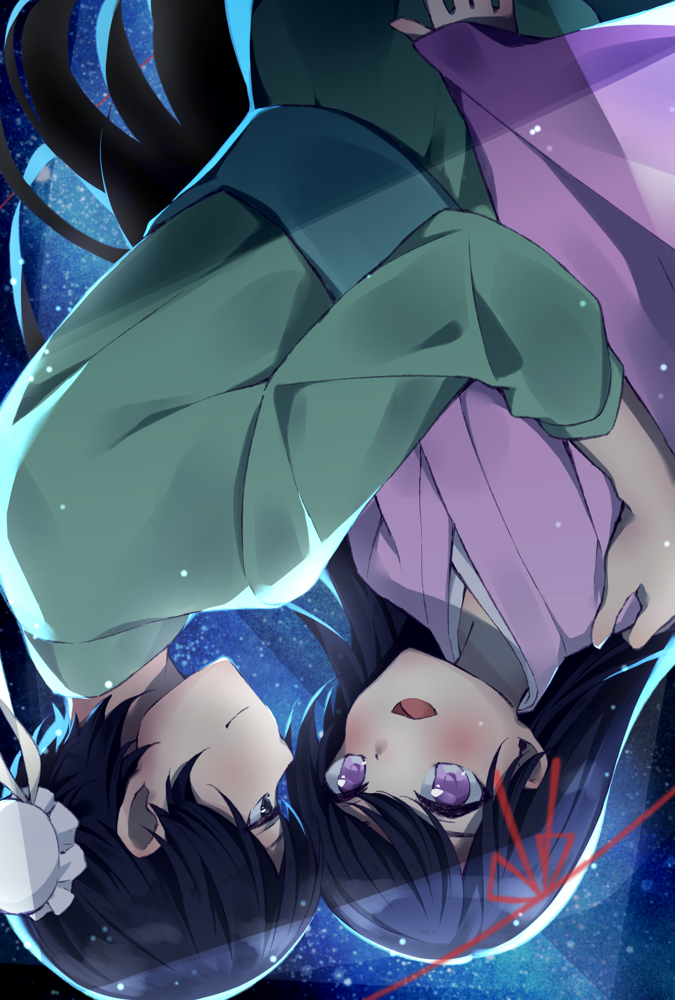
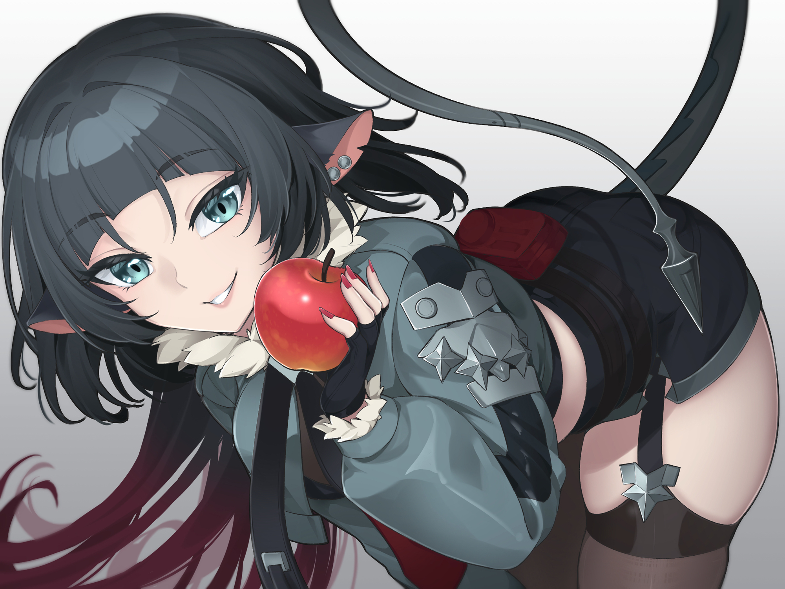
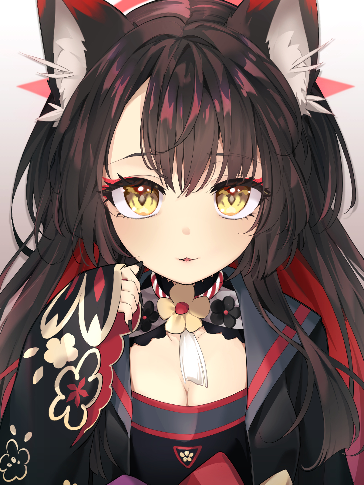
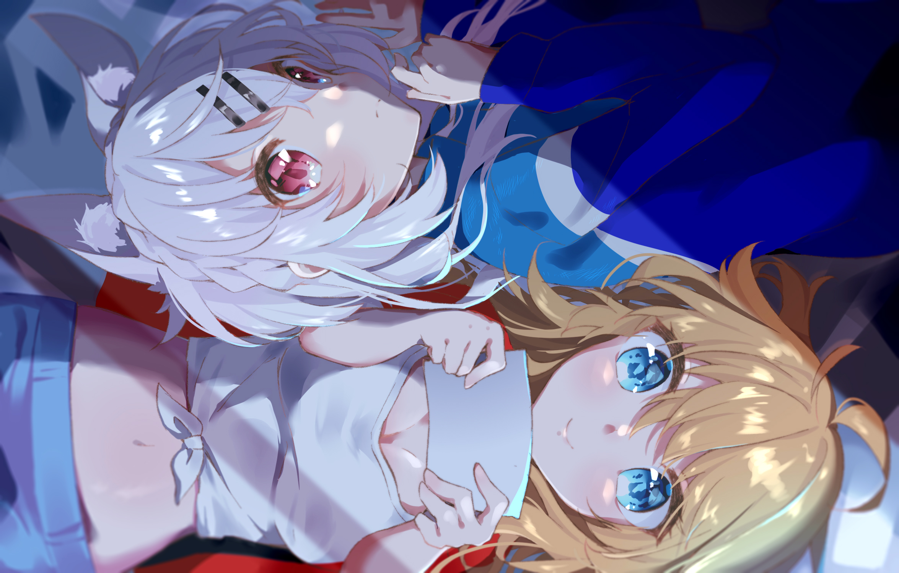
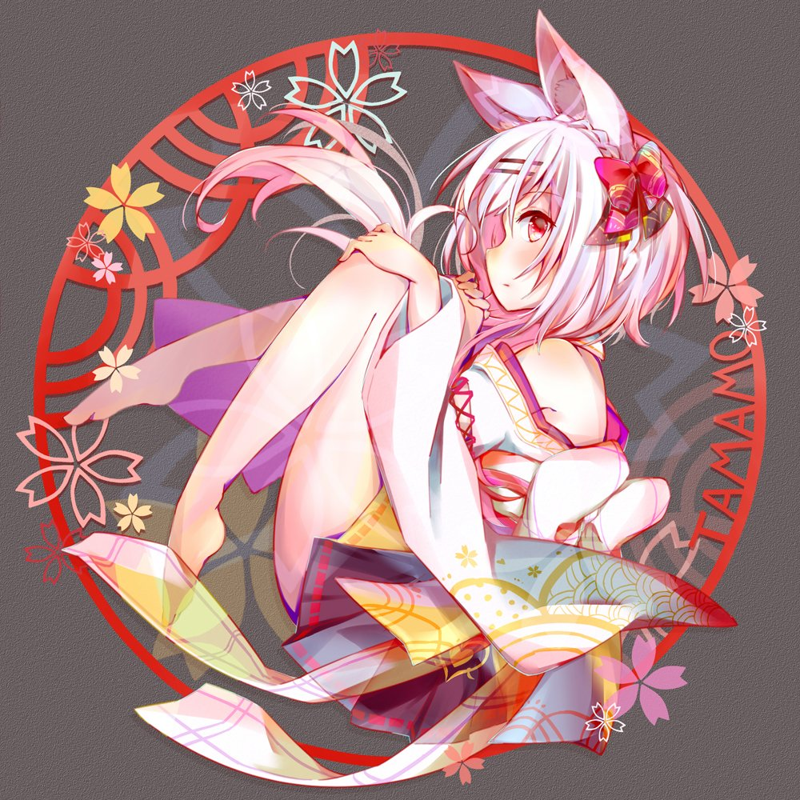
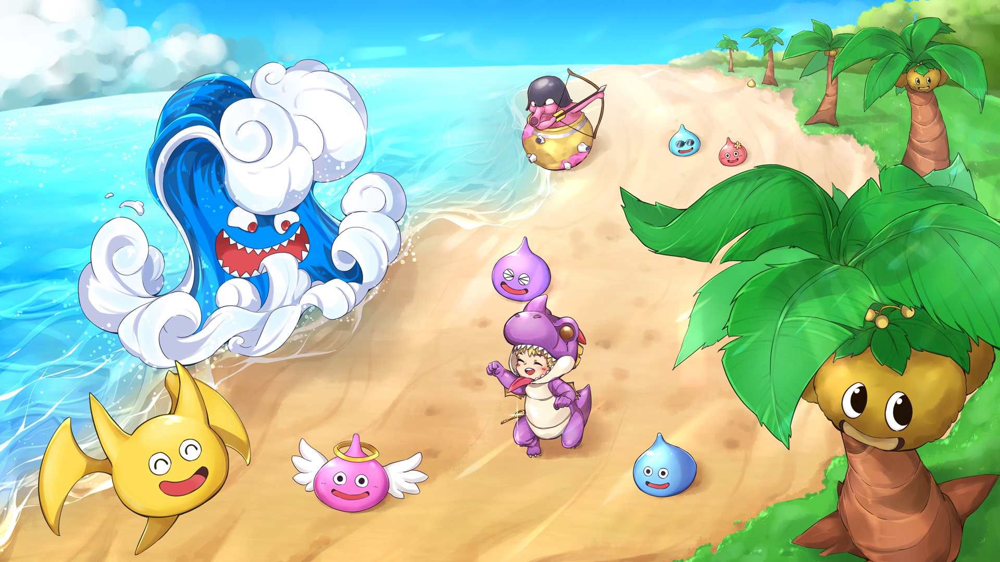